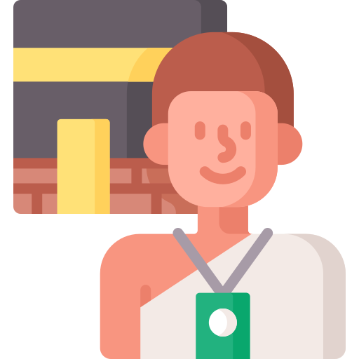
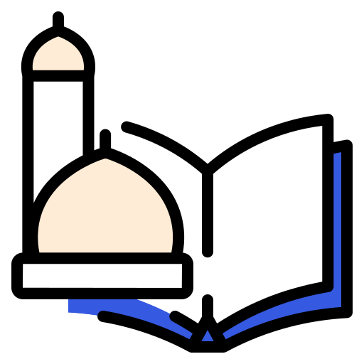

Pilih Jenis Layanan Online

Tata Usaha
Izin Belajar dan Tugas Belajar
Permohonan Nomor ID Rumah Ibadah
Permohonan Pendirian Rumah Ibadah

Haji & Umrah
Pelimpahan Nomor Porsi Meninggal
Pelimpahan Nomor Porsi Sakit Permanen
Pembatalan BPIH/Penarikan Setoran Awal
Pembatalan Haji Pribadi
Rekomendasi Passpor Umroh

Pendidikan Agama dan Keagamaan Islam
Permohonan Izin Operasional Pondok Pesantren
Persyaratan Pendirian LPQ
Persyaratan TPG Guru

Pendidikan Madrasah
Izin Pendirian Madrasah Diniyah
dll

Bimbingan Masyarakat
Permohonan Nomor ID Masjid/Mushola
Persyaratan ID Majlis Taqlim

PTSP
Administrasi Umum